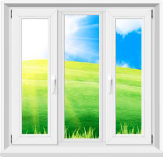

Компания "Окна ЛЮКС" предлагает своим клиентам только качественные изделия, сделанные из надежного профиля.
Пластиковые окна
Одностворчатые пластиковые окна
Преимущества
Одностворчатые окна ПВХ могут монтироваться практически на любых объектах и этажах
Оптимальный выбор для помещений с небольшими проемами
Этот тип окон экономичен, особенно при условии использования однокамерных стеклопакетов
Одностворчатые окна проще ремонтировать и менять на новые
Недостатки
Если одностворчатые окна устанавливаются на первых этажах, целесообразно выбрать противовзломную фурнитуру.
Двухстворчатые пластиковые окна
Преимущества
Возможны два варианта - с одной рабочей (открывающейся) створкой или с двумя
Наличие открывающейся створки позволяет поддерживать чистоту внешней поверхности стеклопакетов
Откидной механизм предусматривает возможность эффективного проветривания помещения без создания сквозняков
Двухстворчатые оконные конструкции имеют длительный срок службы
Недостатки
Стоимость двухстворчатого окна ПВХ несколько выше, чем цена одностворчатых конструкций
Глухие пластиковые окна
Преимущества
Невысокая стоимость - один квадратный метр глухой створки обходится почти в два раза дешевле поворотного
Размер «глухого» окна не ограничивается использованием фурнитуры и весом, поэтому может быть любым
Панорамные окна больших размеров идеальны для остекления витрин магазинов, ресторанов и кафе.
Глухие окна отличаются более надежной теплоизоляцией, чем поворотные и откидные, т.к. в них нет щелей
Не требуется специального ухода, как за откидными окнами
Недостатки
По правилам пожарной безопасности можно использовать не выше 1-го этажа
Лучше использовать в комбинации с поворотными или поворотно-откидными окнами
Трехстворчатые пластиковые окна

Преимущества
Возможны варианты как с одной, так и с двумя рабочими створками
Стоимость трехстворчатых окон ПВХ, как правило, невысока, поскольку используется минимум фурнитуры
Благодаря делению оконного полотна на несколько частей, в несколько раз увеличивается надежность окна, а также заметно снижается нагрузка, оказываемая на несущие элементы конструкции.
Большое окно служит источником естественного освещения и элегантным украшением любого помещения.
Недостатки
Не практично устанавливать в оконные проемы, ширина которых менее 2-х метров, т.к. ширина каждой створки такого пластикового окна примерно 70 см.